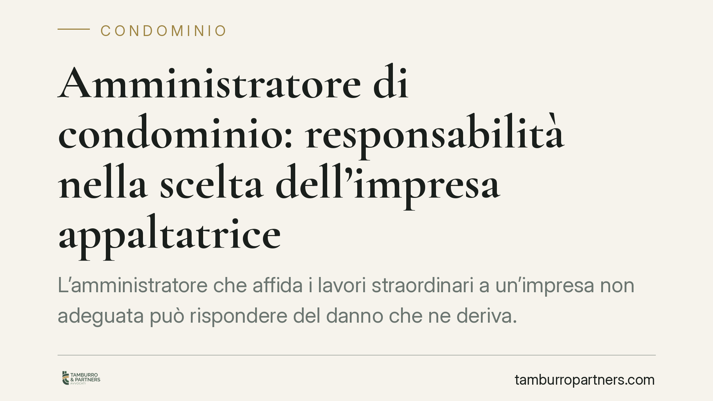

Amministratore di condominio: responsabilità nella scelta dell'impresa appaltatrice
L'amministratore che affida i lavori straordinari a un'impresa non adeguata può rispondere del danno che ne deriva. Il tema tocca la culpa in eligendo e in vigilando e gli obblighi di verifica documentale imposti dalla normativa sulla sicurezza. Vediamo cosa dice la giurisprudenza e come muoversi per contenere il rischio.

Il fatto e perché conta
La scelta dell'impresa che esegue i lavori sulle parti comuni non è un atto neutro. Quando l'amministratore seleziona un appaltatore privo dei requisiti tecnici o della regolarità documentale, e da quella scelta deriva un danno, può esserne chiamato a rispondere.
La questione ruota attorno a due concetti: la *culpa in eligendo* (colpa nella scelta) e la *culpa in vigilando* (colpa nel controllo). In parole semplici: l'amministratore risponde non solo se sceglie male, ma anche se, una volta scelta l'impresa, omette di vigilare sull'esecuzione dei lavori.
Inquadramento normativo
Il perimetro dei poteri e dei doveri dell'amministratore è tracciato dagli artt. 1135 e 1136 c.c. I lavori di manutenzione straordinaria richiedono, di regola, una delibera assembleare: l'amministratore esegue la volontà dell'assemblea, ma conserva un margine di responsabilità autonoma nella fase attuativa.
Sul piano risarcitorio rileva l'art. 2049 c.c., che disciplina la responsabilità dei committenti per i danni cagionati dai loro incaricati. La giurisprudenza di legittimità (Cassazione Civile) e di merito (tra cui il Tribunale di Pescara) ha ricondotto a questo schema le ipotesi in cui la selezione di un'impresa inidonea abbia contribuito a causare il danno.
Un ruolo centrale lo gioca l'art. 90 del D.lgs. 81/2008, che pone in capo al committente – ruolo che nel condominio è ricoperto dall'amministratore – precisi obblighi di verifica. Tra questi, l'accertamento dell'idoneità tecnico-professionale dell'impresa, che passa dal controllo del certificato di iscrizione alla camera di commercio, del documento unico di regolarità contributiva (DURC) e dell'autocertificazione sul rispetto degli obblighi in materia di sicurezza.
Implicazioni pratiche
Per l'amministratore questo significa che affidarsi al preventivo più economico, senza alcuna verifica, espone a un rischio concreto. Se l'impresa scelta risulta priva dei requisiti e causa un danno – a un condòmino, a un terzo o allo stesso stabile – l'amministratore può essere coinvolto in solido, con conseguenze anche sul piano dell'eventuale revoca dell'incarico.
Il rischio non si esaurisce con l'affidamento. Durante l'esecuzione dei lavori permane il dovere di vigilanza: ignorare segnalazioni, non intervenire su irregolarità evidenti o non sospendere lavori palesemente difformi può integrare la *culpa in vigilando*.
Va poi ricordato il profilo fiscale. Nei lavori che beneficiano di detrazioni, l'amministratore gestisce adempimenti verso l'Agenzia delle Entrate, dalle comunicazioni obbligatorie alla corretta tracciabilità dei pagamenti. Un'impresa irregolare può compromettere il diritto dei condòmini al beneficio fiscale, aggravando ulteriormente il quadro di responsabilità.
È bene precisare un punto: la responsabilità non è automatica. Occorre un nesso tra la scelta o l'omessa vigilanza e il danno concreto. L'amministratore diligente che documenta le proprie verifiche costruisce, di fatto, la prova della propria correttezza.
Cosa fare in concreto
- Verifica i requisiti prima di affidare. Acquisisci e conserva visura camerale, DURC in corso di validità e autocertificazione dell'impresa sui requisiti di sicurezza ex art. 90 D.lgs. 81/2008.
- Confronta più preventivi e motiva la scelta. Non fermarti al prezzo: valuta esperienza, referenze e congruità economica, mettendo per iscritto le ragioni della selezione.
- Formalizza tutto in delibera. Porta la scelta dell'impresa all'attenzione dell'assemblea quando la legge lo richiede e verbalizza con precisione l'incarico conferito.
- Vigila durante l'esecuzione. Documenta i sopralluoghi, annota le eventuali contestazioni e intervieni tempestivamente sulle irregolarità.
- Presidia il capitolo fiscale. Verifica la tracciabilità dei pagamenti e la regolarità dell'impresa anche in funzione delle detrazioni spettanti ai condòmini.
La diligenza, in questa materia, è la miglior forma di tutela: consigliamo di trasformare ogni verifica in un documento archiviato e reperibile. In caso di contestazioni, saranno proprio quelle carte a fare la differenza.
Disclaimer
Contributo informativo a cura di Tamburro & Partners - Avv. Giuseppe Tamburro. Non costituisce parere legale.
Ogni condominio ha una storia a sé.
Se gestisci un'amministrazione e vuoi un confronto su una specifica questione condominiale, scrivi allo studio. Ti rispondiamo entro un giorno lavorativo.